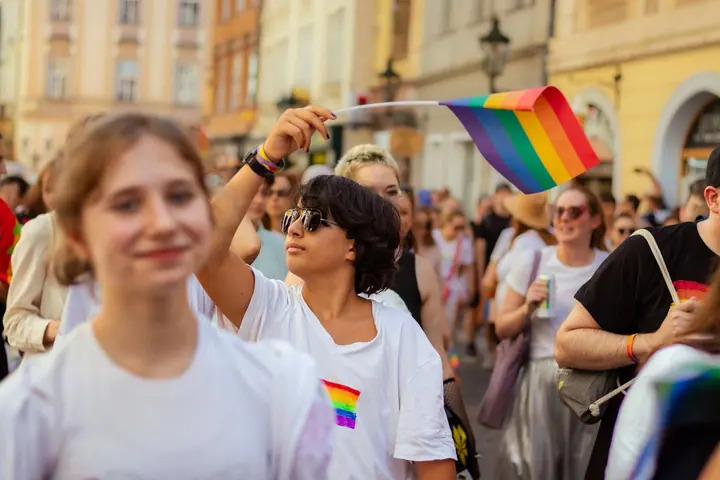
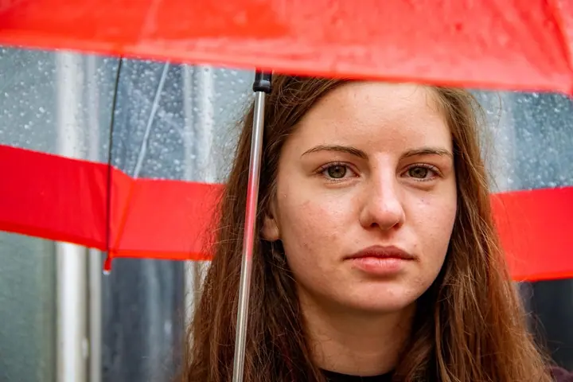

01 / 04
Focení akcí a eventů
Festivaly, konference, divadlo, koncerty, běžecké závody i průvody. Akci zaznamenám jako pozorovatelka tak, aby z fotek byl cítit příběh lidí a atmosféra místa.
Zeptat se na termín→


Příběhy lidí takové, jaké jsou
Zeptat se na termín →(01) Ahoj
Jmenuji se Alžběta Hronová a v Praze fotím festivaly, průvody , divadlo, svatby i portréty . Snažím se zachytit momenty takové, jaké jsou, najít v nich estetickou krásu a nic nepřikrášlovat.
(02) Co fotím
01 / 04
Festivaly, konference, divadlo, koncerty, běžecké závody i průvody. Akci zaznamenám jako pozorovatelka tak, aby z fotek byl cítit příběh lidí a atmosféra místa.
Zeptat se na termín→02 / 04
Celý den fotím spíše reportážně a nenápadně, aby vznikly přirozené fotky s emocemi, vtipnými chvílemi a detaily. Když budete chtít, rádi uděláme i skupinové fotky a portréty a s pózováním vám pomůžu.
Zeptat se na termín→03 / 04
Na focení si necháme dost času, abychom se oba uvolnili a vznikly pravdivé fotky bez křeče. Hodí se třeba na LinkedIn nebo k profesním článkům.
Zeptat se na termín→Dále nabízím
Spíš než aranžované pózy hledám skutečné chvíle mezi vámi. Fotíme venku a v klidu, jen trochu usměrním, když bude potřeba.
↗(04) Postup
Od první zprávy po hotovou galerii.
Krok 1 z 4
Napište mi nebo zavolejte. Probereme, co plánujete, a zodpovím vám všechny otázky.
Krok 2 z 4
Projdeme program, místa a momenty, na kterých vám nejvíc záleží, a domluvíme se, jestli chcete i skupinové fotky nebo portréty.
Krok 3 z 4
Fotím nenápadně a reportážně, aby se všichni cítili pohodlně. Když je potřeba, dění citlivě usměrním.
Krok 4 z 4
Fotky upravím a nasdílím vám je v požadovaném formátu i v online galerii, kterou snadno pošlete rodině a přátelům. Svatby mám většinou hotové do týdne.
Fotím s respektem k lidem a k chvílím, které žijí

(05) Za objektivem
Fotografie mě provází od chvíle, kdy mi maminka poprvé půjčila svou starou zrcadlovku. Bylo mi asi deset a trpělivě jsem se skláněla nad květinami a brouky. Tehdy jsem ještě nevěděla, že v hledáčku najdu svůj hlavní výrazový prostředek.
Dnes se věnuji hlavně reportážní a dokumentární fotografii. Pravidelně fotím pro Českou asociaci umělé inteligence, Prague Pride nebo sdružení Dobroběh a spolupracuji s divadly a uměleckými projekty, třeba s divadlem Archa+ nebo spolkem Šembera. Hodně mě posunul výběr do Canon Student Development Programme, kde jsem svou práci konzultovala se světovými fotografy a kritiky.
Při focení jsem spíš pozorovatelka a do dění moc nezasahuji, ale když je potřeba, umím ho citlivě usměrnit a pomoct vám s pózováním. Fotím s respektem k lidem i situacím a jsem aktivní a energická, takže když to fotka bude chtít, klidně poběžím nebo vylezu na strom.
Alžběta
Alžběta Hronová · Reportážní a dokumentární fotografka
Spíš ne. Mám reportážní a pozorovatelský styl, takže váš den nebudu moc narušovat. Pokud budete chtít skupinové fotky nebo portréty, pomůžu vám s pózováním a svatebčany v klidu „zkrotím“.
Ze svatby dostanete přibližně 100 upravených fotek, většinou do týdne. K tomu vytvořím online galerii pro rodinu a přátele.
Většinou dělám mix barevných a černobílých fotek, ale vždycky záleží na naší domluvě.
Určitě. Na portrét si necháme dost času, povídáme si a fotíme v pohybu mezi místy, takže se uvolníte a úsměv přijde sám.
Focení akce začíná od 2 500 Kč, portrét, párové a rodinné focení od 2 000 Kč. Přesnou cenu vám ráda spočítám podle rozsahu.